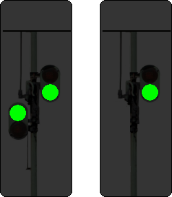

(1) Bedeutung
Fahrt oder Langsamfahrt erwarten.
Signalbuch-Online
Fahrt oder Langsamfahrt erwarten.
Tageszeichen:
Die runde Scheibe liegt waagerecht.

Nachtzeichen:
Zwei grüne Lichter nach rechts steigend.
Nachtzeichen mit einem Licht:
Signale, die nicht an Hauptsignalen stehen, zeigen ein grünes Licht.

Das Signal Vr 1/2 wird nur an zweibegriffigen Formsignalen gezeigt.